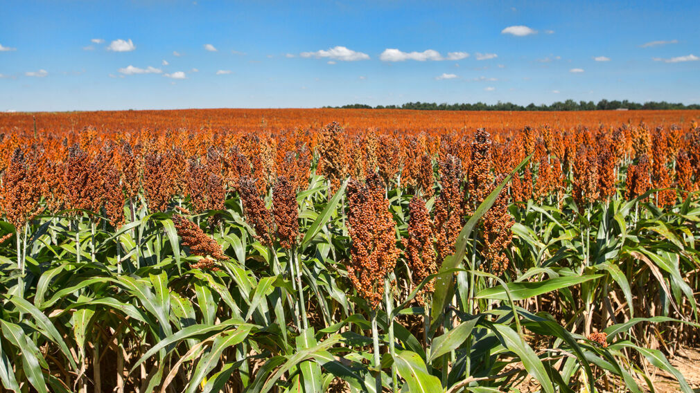
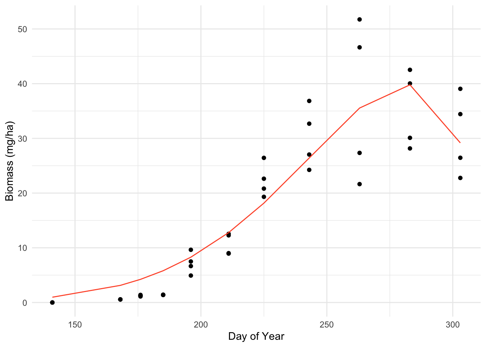
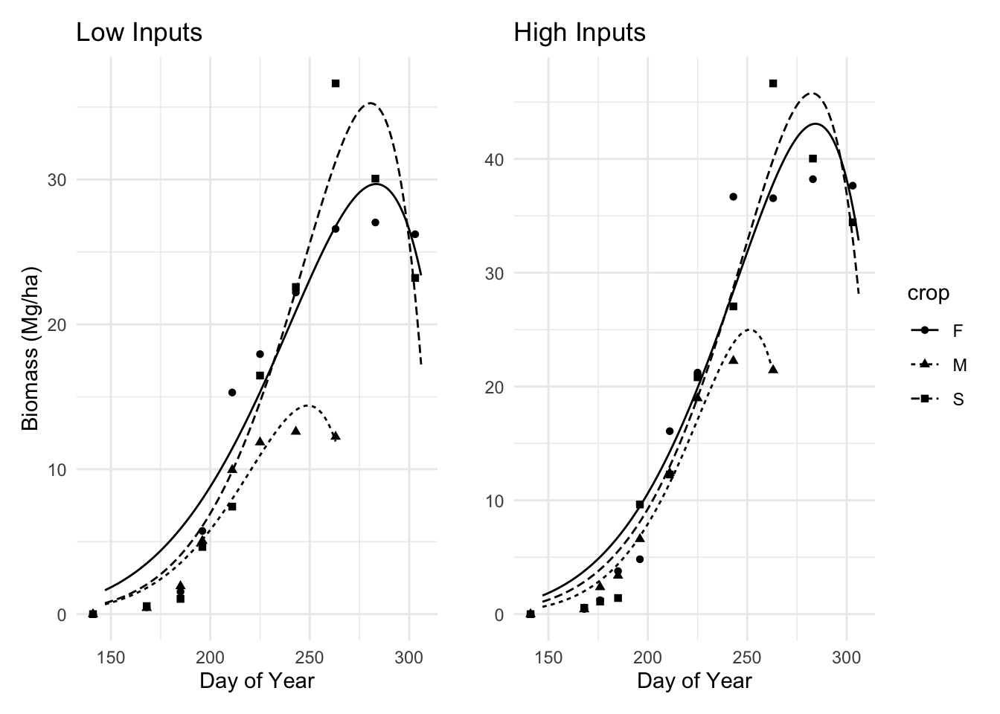

Code
library(tidyverse)
library(knitr)
library(broom)
library(kableExtra)
library(nlraa)
library(janitor)
library(patchwork)Natalie Smith
March 15, 2024
Farmers need to understand the biology of plants and their responses to fertilizers to maximize yield. This analysis aims to help farmers predict yields by running non-linear least squares on experimental growth data for three grains in Greece. Additionally, it assesses the response of the grains to fertilizer inputs.

The dataset contains crop data with the following variables:
# Create a data frame for variables
variables <- data.frame(
Variable = c("DOY", "Block", "Input", "Crop", "Yield"),
Description = c("Day of Year", "Location", "Irrigation & Fertilizer application (High or Low)",
"Type of crop: Fiber sorghum (F), Sweet sorghum (S), or Maize (M)",
"Biomass (Mg/ha)")
)
# Create kable table
variables_kable <- kable(variables) %>%
kable_styling()
variables_kable| Variable | Description |
|---|---|
| DOY | Day of Year |
| Block | Location |
| Input | Irrigation & Fertilizer application (High or Low) |
| Crop | Type of crop: Fiber sorghum (F), Sweet sorghum (S), or Maize (M) |
| Yield | Biomass (Mg/ha) |
After bringing in the data, and cleaning it up we need to choose a model for our NLS process. Of the 77 potential functions in the paper, we will be using the Beta function:
\[ y = ymax (1 + \frac{te - t}{te - tm})\left(\frac{t}{te}\right)^{\frac{te}{te - tm}} \]
The parameters for the beta function are described below:
# Create a data frame with the parameters
beta_parameters <- data.frame(
Parameter = c("Y", "Ymax", "t", "tm", "te"),
Description = c("Response variable (e.g., biomass)", "Asymptotic or maximum Y value",
"Explanatory variable (e.g., day of year)",
"Inflection point at which the growth rate is maximized",
"Time when Y = Yasym")
)
# Create kable table
beta_table <- kable(beta_parameters) %>%
kable_styling()
beta_table| Parameter | Description |
|---|---|
| Y | Response variable (e.g., biomass) |
| Ymax | Asymptotic or maximum Y value |
| t | Explanatory variable (e.g., day of year) |
| tm | Inflection point at which the growth rate is maximized |
| te | Time when Y = Yasym |
To find potential starting parameter values (guesses) for our NLS analysis, we created an exploratory plot showing biomass over time.
# Plot
guess_plot <- ggplot(crop_df, aes(x = doy, y = yield, color = "data")) +
geom_point() +
geom_smooth()+
facet_grid(. ~ input, scales = "free_y", space = "free_x")+
scale_color_manual(values = c("data" = "black", "model" = "#FF5733")) +
labs(y = "Biomass (mg/ha)", x = "Day of Year", color = " ")+
theme_minimal()Next, we filter to keep the observations from only the sorghum fields (S) with high inputs (2) and run an NLS model to predict yield for any given day of the year.
The following table shows selected parameter values from the NLS sorghum output, as well as a graph:
# Create a summary table
summary_table <- coefficients(summary(nls_1))
# Basic table
cute_kable <- kable(summary_table)
# Fancy table
fancy_kable <- kable(summary_table, align = "lccc", digits = 3,
col.names = c("Parameter",
"Estimate",
"Standard Error",
"T-value",
"P-value")) %>%
kable_styling()
fancy_kable | Parameter | Estimate | Standard Error | T-value | P-value |
|---|---|---|---|---|
| ymax | 39.820 | 2.249 | 17.707 | 0 |
| te | 281.586 | 2.081 | 135.329 | 0 |
| tm | 244.777 | 3.512 | 69.698 | 0 |

We now need to run our NLS models for all 24 combinations of plot, input level, and crop type using purrr.
#Define a new function to pass along the nls calls
all_nls <- function(test_df) {
nls(yield ~ beta(ymax, te, tm, doy),
data = test_df,
start = list(ymax = ymax_guess, te = te_guess, tm = tm_guess))
}
# Replicate w Purrr
all_crops <- crop_df %>%
group_by(block,input,crop) %>%
nest() %>%
mutate(nls_model = map(data, ~ all_nls(.x))) %>%
mutate(predictions = map2(nls_model, data, ~ predict(.x, newdata = .y))) %>%
mutate(rmse = map2_dbl(predictions, data, ~ Metrics::rmse(.x, .y$yield))) %>%
mutate(smooth = map(nls_model, ~predict(.x, newdata = list(doy = seq(147,306)))))
# all_cropsThe tables below display the lowest RMSE and the best-fitted models for each species:
# Calculate minimum RMSE for each crop
rmse_table <- all_crops %>%
group_by(crop) %>%
summarize(rmse = min(rmse))
# Filter data for crops w lowest RMSE
low_rmse <- all_crops %>%
filter(rmse %in% rmse_table$rmse)
# Coefficients for each crop
low_rmse_M <- broom::tidy(low_rmse$nls_model[[1]])
low_rmse_S <- broom::tidy(low_rmse$nls_model[[2]])
low_rmse_F <- broom::tidy(low_rmse$nls_model[[3]])
#M Table
low_rmse_kable_M <- kable(low_rmse_M) %>%
kable_styling()
# Add a title to the table
low_rmse_kable_M <- low_rmse_kable_M %>%
add_header_above(c("Maize (M)" = 5))
# Display the table
low_rmse_kable_M
Maize (M)
|
||||
|---|---|---|---|---|
| term | estimate | std.error | statistic | p.value |
| ymax | 18.9311 | 0.8396975 | 22.54515 | 5e-07 |
| te | 252.5749 | 1.8691750 | 135.12642 | 0e+00 |
| tm | 225.2284 | 1.9262837 | 116.92379 | 0e+00 |
Sweet sorghum (S)
|
||||
|---|---|---|---|---|
| term | estimate | std.error | statistic | p.value |
| ymax | 31.34739 | 2.047997 | 15.30636 | 1.2e-06 |
| te | 278.34652 | 1.817126 | 153.17957 | 0.0e+00 |
| tm | 245.77418 | 3.815020 | 64.42277 | 0.0e+00 |
Fiber sorghum (F)
|
||||
|---|---|---|---|---|
| term | estimate | std.error | statistic | p.value |
| ymax | 29.05637 | 1.657635 | 17.52881 | 5e-07 |
| te | 280.42964 | 1.838956 | 152.49390 | 0e+00 |
| tm | 244.99873 | 3.538545 | 69.23714 | 0e+00 |
# # Combine data for all crops
# low_rmse_combined <- bind_rows(low_rmse_M, low_rmse_S, low_rmse_F)
#
# # Crop to the front
# low_rmse_combined <- low_rmse_combined[, c("crop", setdiff(names(low_rmse_combined), "crop"))]
#
# # Kable Table, Baby!
# low_rmse_kable <- kable(low_rmse_combined) %>% kable_styling()
#
# low_rmse_kableTo plot the data effectively, we’ll:
Exclude maize data after day 263, as there’s a noticeable dip.
Create new dataframes to incorporate the filtered data for each input level.
Filter by block 1
# Unnest predictions from data and clean maize data
un_df <- all_crops %>%
filter(block==1) %>%
tidyr::unnest(smooth) %>%
mutate(doy=seq(147,306)) %>%
filter(!(doy>263 & crop=="M"))
# Create a dataframe to add corn data
hi_filter <- crop_df %>%
filter(block == 1 & input == 2)
low_filter <- crop_df %>%
filter(block == 1 & input == 1)# Make graphs
hi_plot <- un_df %>%
filter(block == 1 & input == 2) %>%
ggplot() +
geom_point(data = hi_filter, aes(x = doy, y = yield, shape = crop)) +
geom_line(aes(x = doy, y = smooth, linetype = crop)) +labs(y = " ", x = "Day of Year", color = " ")+
theme_minimal()
# hi_plot
low_plot<-un_df |>
filter(block==1 & input==1) |>
ggplot()+
geom_point(data=low_filter,aes(x=doy,y=yield,shape=crop))+
geom_line(aes(x=doy,y=smooth,linetype=crop))+
labs(y = " Biomass (Mg/ha) ", x = "Day of Year", color = " ")+
theme_minimal()
# low_plot
Results: As depicted in Figure 2, late-year biomass yield for every crop species is highest in the high input scenario, suggesting that increased irrigation and fertilizer lead to enhanced crop yields.
Archontoulis, S.V. and Miguez, F.E. (2015), Nonlinear Regression Models and Applications in Agricultural Research. Agronomy Journal, 107: 786-798.